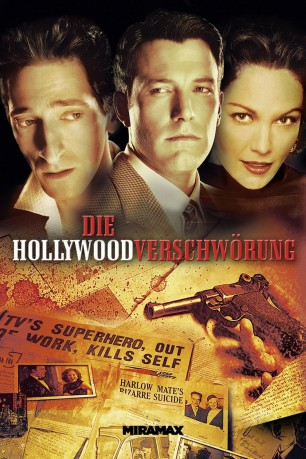

#6052 Die Hollywood-Verschwörung
Alternativ: Hollywoodland
 
 IMDB-Wertung: 6.5 / 10
IMDB-Wertung: 6.5 / 10  Metascore: 0
Metascore: 0 
Am 16.Juni 1959 erschüttert ein Todesfall Hollywood, George Reeve, gefeierter TV-Darsteller wird erschossen aufgefunden. Für die Polizei ist der Fall bald klar: Reeves, der ständig mit dem "Stählernen" identifiziert wurde und keine Arbeit mehr fand und sogar aus Filmen herausgeschnitten wurde, hat Selbstmord begangen. Doch Reeves Mutter gibt sich mit dieser Theorie nicht zufrieden und heuert Privatdetektiv Louis Simo an, um die Wahrheit an Tag zu bringen. Schon bald findet Simo gegen alle Hindernisse in der Schattenwelt Hollywoods heraus, daß Reeves, trotz Verlobung mit dem Starlet Leonore Lemmon eine Affäre mit Toni der Frau des MGM-Studioverantwortlichen Eddie Mannix hatte und Mannix hat keinerlei Interesse daran, das diese Wahrheit ans Licht kommt. Schon bald selbst mehr an dem Fall interessiert als seine Auftraggeberin, bohrt Simo immer tiefer und stößt auf drei Varianten: Selbstmord, Mord oder Unfall...
Jahr: 2006
Dauer: 126 Minuten
FSK: 12
Land: USA Studio: Focus FeaturesTonspuren: DTS - ,
Untertitel: Deutsch,
Auflösung: 1080p (1920x1040) Größe: 11264 MB
Genre: Thriller, Drama, Krimi, Liebe, Mystery, Geschichte, Biographie
Regisseur: Allen Coulter
Drehbuch: Daniel F. Galouye
Soundtrack:
Darsteller:
 Adrien Brody als Louis Simo
Adrien Brody als Louis Simo Diane Lane als Toni Mannix
Diane Lane als Toni Mannix Ben Affleck als George Reeves
Ben Affleck als George Reeves Bob Hoskins als Eddie Mannix
Bob Hoskins als Eddie Mannix Robin Tunney als Leonore Lemmon
Robin Tunney als Leonore Lemmon Kathleen Robertson als Carol Van Ronkel
Kathleen Robertson als Carol Van Ronkel Lois Smith als Helen Bessolo
Lois Smith als Helen Bessolo- Phillip MacKenzie als Bill Bliss
 Larry Cedar als Chester Sinclair
Larry Cedar als Chester Sinclair- Eric Kaldor als Barbell Man
 Caroline Dhavernas als Kit Holliday
Caroline Dhavernas als Kit Holliday- Kevin Hare als Robert Condon
 Molly Parker als Laurie Simo
Molly Parker als Laurie Simo Zach Mills als Evan Simo
Zach Mills als Evan Simo- Neil Crone als Chuck
 Gareth Williams als Del
Gareth Williams als Del- Seamus Dever als Phillip
 Vladimir Jon Cubrt als Morgue Attendant
Vladimir Jon Cubrt als Morgue Attendant Ted Atherton als Detective Doug Johnson
Ted Atherton als Detective Doug Johnson Dash Mihok als Sergeant Jack Paterson
Dash Mihok als Sergeant Jack Paterson- Joan Gregson als Chopard Saleswoman
- Todd Grinnell als Times Reporter
- David J. MacNeil als Officer Daniel Korby
- Ayumi Iizuka als Miss Yoshida
 Jeffrey DeMunn als Art Weissman
Jeffrey DeMunn als Art Weissman- Jeff Teravainen als Lester Koenig, Auditioning Actor
 Steve Adams als Bob Maxwell, Producer
Steve Adams als Bob Maxwell, Producer Brad William Henke als Russ Taylor
Brad William Henke als Russ Taylor- Joseph Adam als Jack Larson / Jimmy Olsen
 Robert B. Kennedy als Tommy Carr, Director
Robert B. Kennedy als Tommy Carr, Director Joe Spano als Howard Strickling
Joe Spano als Howard Strickling Richard Fancy als Alford Rip Van Ronkel
Richard Fancy als Alford Rip Van Ronkel- Jason Spevack als Kenneth Giles
 Dendrie Taylor als Mrs. Sinclair
Dendrie Taylor als Mrs. Sinclair- Jody Jaress als Mannix Maid
- Terry C. Barna als Buddy Adler
 Bill Lake als Cigar Man
Bill Lake als Cigar Man Natalie Krill als Camera Girl
Natalie Krill als Camera Girl- Cameron Mitchell Jr. als Earl Wilson
- Donald Burda als Rick Harris
- Charlie Lea als 5-Year-Old Evan
- Matt Amar als Man at Police Station , uncredited
- Jordan Barker als Wag , uncredited
- Yaron Betan als Delivery Guy , uncredited
- Michael Janik als Cop , uncredited
- Austin Macdonald als Boy at Park , uncredited
- Diego Fuentes als Natividad Vacio
- Veronica Watt als Rita Hayworth
- David Bolt als Judge Eisler
- Eric Fink als Dominick's Waiter
Datei: X:\2006(G-M)\Hollywood-Verschwörung, Die (2006, FSK12, 1920x1040).mkv seit 25.04.2017
Festplatte: HD 2005(G-Z)-2006(A-Z)
 Es gibt insgesamt 48 Filme in der Gruppe '2006(G-M)'
Es gibt insgesamt 48 Filme in der Gruppe '2006(G-M)'